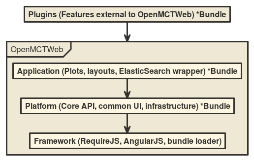
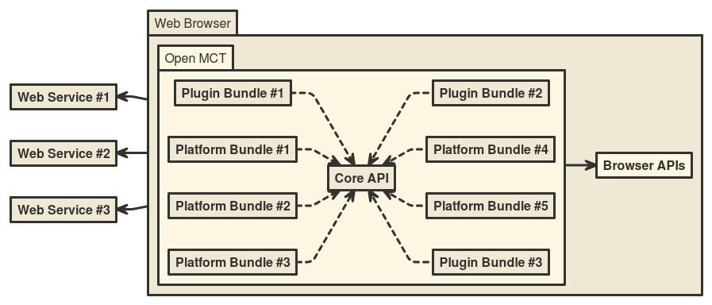

Victor Woeltjen
September 23, 2015
Document Version 1.1
| Date | Version | Summary of Changes | Author |
|---|---|---|---|
| April 29, 2015 | 0 | Initial Draft | Victor Woeltjen |
| May 12, 2015 | 0.1 | Victor Woeltjen | |
| June 4, 2015 | 1.0 | Name Changes | Victor Woeltjen |
| October 4, 2015 | 1.1 | Conversion to MarkDown | Andrew Henry |
| April 5, 2016 | 1.2 | Added Mct-table directive | Andrew Henry |
The purpose of this guide is to familiarize software developers with the Open MCT Web platform.
Open MCT is a platform for building user interface and display tools, developed at the NASA Ames Research Center in collaboration with teams at the Jet Propulsion Laboratory. It is written in HTML5, CSS3, and JavaScript, using AngularJS as a framework. Its intended use is to create single-page web applications which integrate data and behavior from a variety of sources and domains.
Open MCT has been developed to support the remote operation of space vehicles, so some of its features are specific to that task; however, it is flexible enough to be adapted to a variety of other application domains where a display tool oriented toward browsing, composing, and visualizing would be useful.
Open MCT provides:
Open MCT is client software - it runs entirely in the user's web browser. As such, it is largely 'server agnostic'; any web server capable of serving files from paths is capable of providing Open MCT.
While Open MCT can be configured to run as a standalone client, this is rarely very useful. Instead, it is intended to be used as a display and interaction layer for information obtained from a variety of back-end services. Doing so requires authoring or utilizing adapter plugins which allow Open MCT Web to interact with these services.
Typically, the pattern here is to provide a known interface that Open MCT can utilize, and implement it such that it interacts with whatever back-end provides the relevant information. Examples of back-ends that can be utilized in this fashion include databases for the persistence of user-created objects, or sources of telemetry data.
See the Architecture Guide for information on the client-server relationship.
Building applications with Open MCT typically means authoring and utilizing a set of plugins which provide application-specific details about how Open MCT Web should behave.
Open MCT sources are written in JavaScript, with a number of configuration
files written in JSON. Displayable components are written in HTML5 and CSS3.
Open MCT is built using AngularJS from Google. A
good understanding of Angular is recommended for developers working with Open
MCT Web.
Open MCT does not currently have a single stand-alone artifact that can be used as a library. Instead, the recommended approach for creating a new application is to start by forking/branching Open MCT, and then adding new features from there. Put another way, Open MCT's source structure is built to serve as a template for specific applications.
Forking in this manner should not require that you edit Open MCT's sources.
The preferred approach is to create a new directory (peer to index.html) for
the new application, then add new bundles (as described in the Framework
chapter) within that directory.
To initially clone the Open MCT repository:
git clone <repository URL> <local repo directory> -b open-master
To create a fork to begin working on a new application using Open MCT:
cd <local repo directory>
git checkout open-master
git checkout -b <new branch name>
As a convention used internally, applications built using Open MCT have master branch names with an identifying prefix. For instance, if building an application called 'Foo', the last statement above would look like:
git checkout -b foo-master
This convention is not enforced or understood by Open MCT in any way; it is mentioned here as a more general recommendation.
Open MCT is implemented as a framework component which manages a set of other components. These components, called bundles, act as containers to group sets of related functionality; individual units of functionality are expressed within these bundles as extensions.
Extensions declare dependencies on other extensions (either individually or categorically), and the framework provides actual extension instances at run-time to satisfy these declared dependency. This dependency injection approach allows software components which have been authored separately (e.g. as plugins) but to collaborate at run-time.
Open MCT's framework layer is implemented on top of AngularJS's dependency injection mechanism and is modelled after OSGi and its Declarative Services component model. In particular, this is where the term bundle comes from.
The framework's role in the application is to manage connections between bundles. All application-specific behavior is provided by individual bundles, or as the result of their collaboration.
The framework is described in more detail in the Framework Overview of the architecture guide.
While all bundles in a running Open MCT instance are effectively peers, it is useful to think of them as a tiered architecture, where each tier adds more specificity to the application.

Note that bundles in any tier can go off and consult back-end services. In practice, this responsibility is handled at the Application and/or Plugin tiers; Open MCT is built to be server-agnostic, so any back-end is considered an application-specific detail.
The "tiered" architecture described in the preceding text describes a way of thinking of and categorizing software components of a Open MCT application, as well as the framework layer's role in mediating between these components. Once the framework layer has wired these software components together, however, the application's logical architecture emerges.
An overview of the logical architecture of the platform is given in the Platform Architecture section of the Platform guide
As mentioned in the Introduction, Open MCT is a platform single-page
applications which runs entirely in the browser. Most applications will want to
additionally interact with server-side resources, to (for example) read
telemetry data or store user-created objects. This interaction is handled by
individual bundles using APIs which are supported in browser (such as
XMLHttpRequest, typically wrapped by Angular's $http.)

This architectural approach ensures a loose coupling between applications built using Open MCT and the backends which support them.
Certain terms are used throughout Open MCT with consistent meanings or conventions. Other developer documentation, particularly in-line documentation, may presume an understanding of these terms.
Open MCT is built on the AngularJS framework. A good understanding of that framework is recommended.
Open MCT adds an extra layer on top of AngularJS to (a) generalize its dependency injection mechanism slightly, particularly to handle many-to-one relationships; and (b) handle script loading. Combined, these features become a plugin mechanism.
This framework layer operates on two key concepts:
The framework layer, loaded and initiated from index.html, is the main point
of entry for an application built on Open MCT. It is responsible for wiring
together the application at run time (much of this responsibility is actually
delegated to Angular); at a high-level, the framework does this by proceeding
through four stages:
The basic configurable unit of Open MCT is the bundle. This term has been used a bit already; now we'll get to a more formal definition.
A bundle is a directory which contains:
bundle.json.README.md Markdown file describing its contents (this is not
used by Open MCT in any way, but it's a helpful convention to follow.)The bundle definition is the main point of entry for the bundle. The framework looks at this to determine which components need to be loaded and how they interact.
A plugin in Open MCT is a bundle. The platform itself is also decomposed into bundles, each of which provides some category of functionality. The difference between a bundle and a plugin is purely a matter of the intended use; a plugin is just a bundle that is meant to be easily added or removed. When developing, it is typically more useful to think in terms of bundles.
To decide which bundles should be loaded, the framework loads a file named
bundles.json (peer to the index.html file which serves the application) to
determine which bundles should be loaded. This file should contain a single JSON
array of strings, where each is the path to a bundle. These paths should not
include bundle.json (this is implicit) or a trailing slash.
For instance, if bundles.json contained:
[
"example/builtins",
"example/extensions"
]
...then the Open MCT framework would look for bundle definitions at
example/builtins/bundle.json and example/extensions/bundle.json, relative
to the path of index.html. No other bundles would be loaded.
A bundle definition (the bundle.json file located within a bundle) contains a
description of the bundle itself, as well as the information exposed by the
bundle.
This definition is expressed as a single JSON object with the following properties (all of which are optional, falling back to reasonable defaults):
key: A machine-readable name for the bundle. (Currently used only in
logging.) name: A human-readable name for the bundle. (Also only used in logging.) sources: Names a directory in which source scripts (which will implement
extensions) are located. Defaults to 'src' resources: Names a directory in which resource files (such as HTML templates,
images, CS files, and other non-JavaScript files needed by this bundle) are
located. Defaults to 'res' libraries: Names a directory in which third-party libraries are located.
Defaults to 'lib' configuration: A bundle's configuration object, which should be formatted as
would be passed to require.config (see RequireJS documentation );
note that only paths and shim have been tested. extensions: An object containing key-value pairs, where keys are extension
categories, and values are extension definitions. See the section on Extensions
for more information. For example, the bundle definition for example/policy looks like:
{
"name": "Example Policy",
"description": "Provides an example of using policies.",
"sources": "src",
"extensions": {
"policies": [
{
"implementation": "ExamplePolicy.js",
"category": "action"
}
]
}
}
In addition to the directories defined in the bundle definition, a bundle will
typically contain other directories not used at run-time. Additionally, some
useful development scripts (such as the command line build and the test suite)
expect this directory structure to be in use, and may ignore options chosen by
bundle.json. It is recommended that the directory structure described below be
used for new bundles.
src: Contains JavaScript sources for this bundle. May contain additional
subdirectories to organize these sources; typically, these subdirectories are
named to correspond to the extension categories they contain and/or support, but
this is only a convention. res: Contains other files needed by this bundle, such as HTML templates. May
contain additional subdirectories to organize these sources. lib: Contains JavaScript sources from third-party libraries. These are
separated from bundle sources in order to ignore them during code style checking
from the command line build.test: Contains JavaScript sources implementing Jasmine
tests, as well as a file named suite.json describing which files to test.
Should have the same folder structure as the src directory; see the section on
automated testing for more information. For example, the directory structure for bundle platform/commonUI/about looks
like:
Platform
|
|-commonUI
|
+-about
|
|-res
|
|-src
|
|-test
|
|-bundle.json
|
+-README.md
While bundles provide groupings of related behaviors, the individual units of behavior are called extensions.
Extensions belong to categories; an extension category is the machine-readable
identifier used to identify groups of extensions. In the extensions property
of a bundle definition, the keys are extension categories and the values are
arrays of extension definitions.
Extensions are intended as a general-purpose mechanism for adding new types of functionality to Open MCT.
An extension category is registered with Angular under the name of the
extension, plus a suffix of two square brackets; so, an Angular service (or,
generally, any other extension) can access the full set of registered
extensions, from all bundles, by including this string (e.g. types[] to get
all type definitions) in a dependency declaration.
As a convention, extension categories are given single-word, plural nouns for
names within Open MCT (e.g. types.) This convention is not enforced by the
platform in any way. For extension categories introduced by external plugins, it
is recommended to prefix the extension category with a vendor identifier (or
similar) followed by a dot, to avoid collisions.
The properties used in extension definitions are typically unique to each category of extension; a few properties have standard interpretations by the platform.
implementation: Identifies a JavaScript source file (in the sources
folder) which implements this extension. This JavaScript file is expected to
contain an AMD module (see http://requirejs.org/docs/whyamd.html#amd ) which
gives as its result a single constructor function. depends: An array of dependencies needed by this extension; these will be
passed on to Angular's dependency injector .
By default, this is treated as an empty array. Note that depends does not make
sense without implementation (since these dependencies will be passed to the
implementation when it is instantiated.) priority: A number or string indicating the priority order (see below) of
this extension instance. Before an extension category is registered with
AngularJS, the extensions of this category from all bundles will be concatenated
into a single array, and then sorted by priority. Extensions do not need to have an implementation. If no implementation is provided, consumers of the extension category will receive the extension definition as a plain JavaScript object. Otherwise, they will receive the partialized (see below) constructor for that implementation, which will additionally have all properties from the extension definition attached.
In general, extensions are intended to be implemented as constructor functions, which will be used elsewhere to instantiate new objects of that type. However, the Angular-supported method for dependency injection is (effectively) constructor-style injection; so, both declared dependencies and run-time arguments are competing for space in a constructor's arguments.
To resolve this, the Open MCT framework registers extension instances in a partially constructed form. That is, the constructor exposed by the extension's implementation is effectively decomposed into two calls; the first takes the dependencies, and returns the constructor in its second form, which takes the remaining arguments.
This means that, when writing implementations, the constructor function should be written to include all declared dependencies, followed by all run-time arguments. When using extensions, only the run-time arguments need to be provided.
Within each extension category, registration occurs in priority order. An
extension's priority may be specified as a priority property in its extension
definition; this may be a number, or a symbolic string. Extensions are
registered in reverse order (highest-priority first), and symbolic strings are
mapped to the numeric values as follows:
fallback: Negative infinity. Used for extensions that are not intended for
use (that is, they are meant to be overridden) but are present as an option of
last resort. default: -100. Used for extensions that are expected to be overridden, but
need a useful default. none: 0. Also used if no priority is specified, or if an unknown or
malformed priority is specified. optional: 100. Used for extensions that are meant to be used, but may be
overridden. preferred: 1000. Used for extensions that are specifically intended to be
used, but still may be overridden in principle. mandatory: Positive infinity. Used when an extension should definitely not
be overridden. These symbolic names are chosen to support usage where many extensions may satisfy a given need, but only one may be used; in this case, as a convention it should be the lowest-ordered (highest-priority) extensions available. In other cases, a full set (or multi-element subset) of extensions may be desired, with a specific ordering; in these cases, it is preferable to specify priority numerically when declaring extensions, and to understand that extensions will be sorted according to these conventions when using them.
Several entities supported Angular are expressed and managed as extensions in Open MCT. Specifically, these extension categories are directives, controllers, services, constants, runs, and routes.
New directives may be registered as extensions of the directives category. Implementations of directives in this category should take only dependencies as arguments, and should return a directive definition object.
The directive's name should be provided as a key property of its extension definition, in camel-case format.
New controllers may be registered as extensions of the controllers category. The implementation is registered directly as the controller; its only constructor arguments are its declared dependencies.
The directive's identifier should be provided as a key property of its extension definition.
New services may be registered as extensions of the services category. The implementation is registered via a service call, so it will be instantiated with the new operator.
Constant values may be registered as extensions of the constants category. These extensions have no implementation; instead, they should contain a property key , which is the name under which the constant will be registered, and a property value , which is the constant value that will be registered.
In some cases, you want to register code to run as soon as the application starts; these can be registered as extensions of the runs category. Implementations registered in this category will be invoked (with their declared dependencies) when the Open MCT application first starts. (Note that, in this case, the implementation is better thought of as just a function, as opposed to a constructor function.)
Extensions of category routes will be registered with Angular's route provider.
Extensions of this category have no implementations, and need only two
properties in their definition:
when: The value that will be passed as the path argument to $routeProvider.when;
specifically, the string that will appear in the trailing
part of the URL corresponding to this route. This property may be omitted, in
which case this extension instance will be treated as the default route. templateUrl: A path to the template to render for this route. Specified as a
path relative to the bundle's resource directory (res by default.) Composite services are described in the Composite Services section of the framework guide.
A component should include the following properties in its extension definition:
provides: The symbolic identifier for the service that will be composed. The
fully-composed service will be registered with Angular under this name.type: One of provider, aggregator or decorator (as above) In addition to any declared dependencies, aggregators and decorators both
receive one more argument (immediately following declared dependencies) that is
provided by the framework. For an aggregator, this will be an array of all
providers of the same service (that is, with matching provides properties);
for a decorator, this will be whichever provider, decorator, or aggregator is
next in the sequence of decorators.
Services exposed by the Open MCT platform are often declared as composite services, as this form is open for a variety of common modifications.
Most of Open MCT's relevant API is provided and/or mediated by the framework; that is, much of developing for Open MCT is a matter of adding extensions which access other parts of the platform by means of dependency injection.
The core bundle (platform/core) introduces a few additional object types meant
to be passed along by other services.
Domain objects are the most fundamental component of Open MCT's information model. A domain object is some distinct thing relevant to a user's workflow, such as a telemetry channel, display, or similar. Open MCT is a tool for viewing, browsing, manipulating, and otherwise interacting with a graph of domain objects.
A domain object should be conceived of as the union of the following:
At run-time, a domain object has the following interface:
getId(): Get the identifier for this domain object. getModel(): Get the plain state associated with this domain object. This
will return a JavaScript object that can be losslessly converted to JSON. Note
that the model returned here can be modified directly but should not be;
instead, use the mutation capability. getCapability(key): Get the specified capability associated with this domain
object. This will return a JavaScript object whose interface is specific to the
type of capability being requested. If the requested capability is not exposed
by this domain object, this will return undefined .hasCapability(key): Shorthand for checking if a domain object exposes the
requested capability.useCapability(key, arguments ): Shorthand for
getCapability(key).invoke(arguments), with additional checking between calls.
If the provided capability has no invoke method, the return value here functions
as getCapability including returning undefined if the capability is not
exposed.For most purposes, a domain object identifier can be treated as a purely symbolic string; these are typically generated by Open MCT and plug-ins should rarely be concerned with its internal structure.
A domain object identifier has one or two parts, separated by a colon.
PERSISTENCE_SPACE constant.Some examples:
foo:xyz would have its model
loaded using key xyz from persistence space foo.bar would have its model loaded
using key bar from the space identified by the PERSISTENCE_SPACE
constant.<identifier> ::= <space> ":" <key> | <key>
<space> ::= <id char>+
<key> ::= <id char>+
<id char> ::= <letter> | <digit> | "-" | "." | "_"
An Action is behavior that can be performed upon/using a DomainObject. An
Action has the following interface:
perform(): Do this action. For example, if one had an instance of a
RemoveAction invoking its perform method would cause the domain object which
exposed it to be removed from its container.getMetadata(): Get metadata associated with this action. Returns an object
containing: name: Human-readable name.description: Human-readable summary of this action. glyph: Single character to be displayed in Open MCT's icon font set. context: The context in which this action is being performed (see below)Action instances are typically obtained via a domain object's action
capability.
An action context is a JavaScript object with the following properties:
domainObject: The domain object being acted upon. selectedObject: Optional; the selection at the time of action (e.g. the
dragged object in a drag-and-drop operation.)Telemetry series data in Open MCT is represented by a common interface, and packaged in a consistent manner to facilitate passing telemetry updates around multiple visualizations.
A telemetry request is a JavaScript object containing the following properties:
source: A machine-readable identifier for the source of this telemetry. This
is useful when multiple distinct data sources are in use side-by-side. key: A machine-readable identifier for a unique series of telemetry within
that source. Additional properties may be included in telemetry requests which have specific interpretations for specific sources.
When returned from the telemetryService (see Telemetry Services
section), telemetry series data will be packaged in a source -> key -> TelemetrySeries
fashion. That is, telemetry is passed in an object containing key-value pairs.
Keys identify telemetry sources; values are objects containing additional
key-value pairs. In this object, keys identify individual telemetry series (and
match they key property from corresponding requests) and values are
TelemetrySeries objects (see below.)
A telemetry series is a specific sequence of data, typically associated with a specific instrument. Telemetry is modeled as an ordered sequence of domain and range values, where domain values must be non-decreasing but range values do not. (Typically, domain values are interpreted as UTC timestamps in milliseconds relative to the UNIX epoch.) A series must have at least one domain and one range, and may have more than one.
Telemetry series data in Open MCT is expressed via the following
TelemetrySeries interface:
getPointCount(): Returns the number of unique points/samples in this series. getDomainValue(index, [domain]): Get the domain value at the specified index .
If a second domain argument is provided, this is taken as a string identifier
indicating which domain option (of, presumably, multiple) should be returned. getRangeValue(index, [range]): Get the domain value at the specified index .
If a second range argument is provided, this is taken as a string identifier
indicating which range option (of, presumably, multiple) should be returned. Domain objects which have associated telemetry also expose metadata about that
telemetry; this is retrievable via the getMetadata() of the telemetry
capability. This will return a single JavaScript object containing the following
properties:
source: The machine-readable identifier for the source of telemetry data for
this object. key: The machine-readable identifier for the individual telemetry series. domains: An array of supported domains (see TelemetrySeries above.) Each
domain should be expressed as an object which includes: key: Machine-readable identifier for this domain, as will be passed into
a getDomainValue(index, domain) call. name: Human-readable name for this domain. ranges: An array of supported ranges; same format as domains . Note that this metadata is also used as the prototype for telemetry requests made using this capability.
A domain object's type is represented as a Type object, which has the following interface:
getKey(): Get the machine-readable identifier for this type. getName(): Get the human-readable name for this type. getDescription(): Get a human-readable summary of this type. getGlyph(): Get the single character to be rendered as an icon for this type
in Open MCT's custom font set. getInitialModel(): Get a domain object model that represents the initial
state (before user specification of properties) for domain objects of this type. getDefinition(): Get the extension definition for this type, as a JavaScript
object. instanceOf(type): Check if this type is (or inherits from) a specified type .
This type can be either a string, in which case it is taken to be that type's
key , or it may be a Type instance. hasFeature(feature): Returns a boolean value indicating whether or not this
type supports the specified feature, which is a symbolic string. getProperties(): Get all properties associated with this type, expressed as
an array of TypeProperty instances. Features of a domain object type are expressed as symbolic string identifiers. They are defined in practice by usage; currently, the Open MCT platform only uses the creation feature to determine which domain object types should appear in the Create menu.
Types declare the user-editable properties of their domain object instances in
order to allow the forms which appear in the Create and Edit Properties
dialogs to be generated by the platform. A TypeProperty has the following interface:
getValue(model): Get the current value for this property, as it appears in
the provided domain object model. setValue(model, value): Set a new value for this property in the provided
domain object model . getDefinition(): Get the raw definition for this property as a JavaScript
object (as it was declared in this type's extension definition.) The information in this section is focused on registering new extensions of specific types; it does not contain a catalog of the extension instances of these categories provided by the platform. Relevant summaries there are provided in subsequent sections.
An action is a thing that can be done to or using a domain object, typically as initiated by the user.
An action's implementation:
context argument in its constructor. (See Action
Contexts, under Core API.)perform which causes the behavior associated with
the action to occur.getMetadata which provides metadata associated with
the action. If omitted, one will be provided by the platform which includes
metadata from the action's extension definition.appliesTo(context) (that is, a function
available as a property of the implementation's constructor itself), which will
be used by the platform to filter out actions from contexts in which they are
inherently inapplicable.An action's bundle definition (and/or getMetadata() return value) may include:
category: A string or array of strings identifying which category or
categories an action falls into; used to determine when an action is displayed.
Categories supported by the platform include: contextual: Actions in a context menu. view-control: Actions triggered by buttons in the top-right of Browse
view. key: A machine-readable identifier for this action. name: A human-readable name for this action (e.g. to show in a menu) description: A human-readable summary of the behavior of this action. glyph: A single character which will be rendered in Open MCT's custom
font set as an icon for this action.Capabilities are exposed by domain objects (e.g. via the getCapability method)
but most commonly originate as extensions of this category.
Extension definitions for capabilities should include both an implementation,
and a property named key whose value should be a string used as a
machine-readable identifier for that capability, e.g. when passed as the
argument to a domain object's getCapability(key) call.
A capability's implementation should have methods specific to that capability;
that is, there is no common format for capability implementations, aside from
support for invocation via the useCapability shorthand.
A capability's implementation will take a single argument (in addition to any declared dependencies), which is the domain object that will expose that capability.
A capability's implementation may also expose a static method appliesTo(model)
which should return a boolean value, and will be used by the platform to filter
down capabilities to those which should be exposed by specific domain objects,
based on their domain object models.
Containers provide options for the mct-container directive.
The definition for an extension in the containers category should include:
key: An identifier for the container.template: An Angular template for the container, including an
ng-transclude where contained content should go.attributes: An array of attribute names. The values associated with
these attributes will be exposed in the template's scope under the
name provided by the alias property.alias: The property name in scope under which attributes will be
exposed. Optional; defaults to "container".Note that templateUrl is not supported for containers.
Controls provide options for the mct-control directive.
These standard control types are included in the forms bundle:
textfield: A text input to enter plain text.numberfield: A text input to enter numbers.select: A drop-down list of options.checkbox: A box which may be checked/unchecked.color: A color picker.button: A button.datetime: An input for UTC date/time entry; gives result as a UNIX
timestamp, in milliseconds since start of 1970, UTC.composite: A control parenting an array of other controls.menu-button: A drop-down list of items supporting custom behavior
on click.dialog-button: A button which opens a dialog allowing a single property
to be edited.radio: A radio button.New controls may be added as extensions of the controls category. Extensions of this category have two properties:
key: The symbolic name for this control (matched against the control field
in rows of the form structure).templateUrl: The URL to the control's Angular template, relative to the
resources directory of the bundle which exposes the extension. Within the template for a control, the following variables will be included in scope:
ngModel: The model where form input will be stored. Notably we also need to
look at field (see below) to determine which field in the model should be
modified. ngRequired: True if input is required.ngPattern: The pattern to match against (for text entry)ngBlur: A function that may be invoked to evaluate the expression
associated with the ng-blur attribute associated with the control.input elements, this should be fired
on blur events associated with those elements, while more complex
custom controls may fire this at the end of more specific interactions.options: The options for this control, as passed from the options property
of an individual row definition. field: Name of the field in ngModel which will hold the value for this
control. A gesture is a user action which can be taken upon a representation of a domain object.
Examples of gestures included in the platform are:
drag: For representations that can be used to initiate drag-and-drop
composition.drop: For representations that can be drop targets for drag-and-drop
composition. menu: For representations that can be used to popup a context menu. Gesture definitions have a property key which is used as a machine-readable
identifier for the gesture (e.g. drag, drop, menu above.)
A gesture's implementation is instantiated once per representation that uses the
gesture. This class will receive the jqLite-wrapped mct-representation element
and the domain object being represented as arguments, and should do any
necessary "wiring" (e.g. listening for events) during its constructor call. The
gesture's implementation may also expose an optional destroy() method which
will be called when the gesture should be removed, to avoid memory leaks by way
of unremoved listeners.
An indicator is an element that should appear in the status area at the bottom of a running Open MCT client instance.
Indicators which wish to appear in the common form of an icon-text pair should provide implementations with the following methods:
getText(): Provides the human-readable text that will be displayed for this
indicator. getGlyph(): Provides a single-character string that will be displayed as an
icon in Open MCT's custom font set. getDescription(): Provides a human-readable summary of the current state of
this indicator; will be displayed in a tooltip on hover. getClass(): Get a CSS class that will be applied to this indicator. getTextClass(): Get a CSS class that will be applied to this indicator's
text portion. getGlyphClass(): Get a CSS class that will be applied to this indicator's
icon portion. configure(): If present, a configuration icon will appear to the right of
this indicator, and clicking it will invoke this method. Note that all methods are optional, and are called directly from an Angular template, so they should be appropriate to run during digest cycles.
Indicators which wish to have an arbitrary appearance (instead of following the
icon-text convention commonly used) may specify a template property in their
extension definition. The value of this property will be used as the key for
an mct-include directive (so should refer to an extension of category
templates .) This template will be rendered to the status area. Indicators of
this variety do not need to provide an implementation.
The extension category licenses can be used to add entries into the 'Licensing
information' page, reachable from Open MCT's About dialog.
Licenses may have the following properties, all of which are strings:
name: Human-readable name of the licensed component. (e.g. 'AngularJS'.)version: Human-readable version of the licensed component. (e.g. '1.2.26'.)description: Human-readable summary of the component.author: Name or names of entities to which authorship should be attributed.copyright: Copyright text to display for this component.link: URL to full license text. Policies are used to handle decisions made using Open MCT's policyService;
examples of these decisions are determining the applicability of certain
actions, or checking whether or not a domain object of one type can contain a
domain object of a different type. See the section on the Policies for an
overview of Open MCT's policy model.
A policy's extension definition should include:
category: The machine-readable identifier for the type of policy decision
being supported here. For a list of categories supported by the platform, see
the section on Policies. Plugins may introduce and utilize additional policy
categories not in that list. message: Optional; a human-readable message describing the policy, intended
for display in situations where this specific policy has disallowed something. A policy's implementation should include a single method, allow(candidate,
context). The specific types used for candidate and context vary by policy
category; in general, what is being asked is 'is this candidate allowed in this
context?' This method should return a boolean value.
Open MCT's policy model requires consensus; a policy decision is allowed
when and only when all policies choose to allow it. As such, policies should
generally be written to reject a certain case, and allow (by returning true)
anything else.
A representation is an Angular template used to display a domain object. The
representations extension category is used to add options for the
mct-representation directive.
A representation definition should include the following properties:
key: The machine-readable name which identifies the representation. templateUrl: The path to the representation's Angular template. This path is
relative to the bundle's resources directory. uses: Optional; an array of capability names. Indicates that this
representation intends to use those capabilities of a domain object (via a
useCapability call), and expects to find the latest results of that
useCapability call in the scope of the presented template (under the same name
as the capability itself.) Note that, if useCapability returns a promise, this
will be resolved before being placed in the representation's scope. gestures: An array of keys identifying gestures (see the gestures
extension category) which should be available upon this representation. Examples
of gestures include drag (for representations that should act as draggable
sources for drag-drop operations) and menu (for representations which should
show a domain-object-specific context menu on right-click.) While representations do not have implementations, per se, they do refer to Angular templates which need to interact with information (e.g. the domain object being represented) provided by the platform. This information is passed in through the template's scope, such that simple representations may be created by providing only templates. (More complex representations will need controllers which are referenced from templates. See https://docs.angularjs.org/guide/controller for more information on controllers in Angular.)
A representation's scope will contain:
domainObject: The represented domain object.model: The domain object's model.configuration: An object containing configuration information for this
representation (an empty object if there is no saved configuration.) The
contents of this object are managed entirely by the view/representation which
receives it. representation: An empty object, useful as a 'scratch pad' for
representation state. ngModel: An object passed through the ng-model attribute of the
mct-representation , if any. parameters: An object passed through the parameters attribute of the
mct-representation, if any. The representers extension category is used to add additional behavior to the
mct-representation directive. This extension category is intended primarily
for use internal to the platform.
Unlike representations, which describe specific ways to represent domain objects, representers are used to modify or augment the process of representing domain objects in general. For example, support for the gestures extension category is added by a representer.
A representer needs only provide an implementation. When an mct-representation
is linked (see https://docs.angularjs.org/guide/directive ) or when the
domain object being represented changes, a new representer of each declared
type is instantiated. The constructor arguments for a representer are the same
as the arguments to the link function in an Angular directive: scope the
Angular scope for this representation; element the jqLite-wrapped
mct-representation element, and attrs a set of key-value pairs of that
element's attributes. Representers may wish to populate the scope, attach
event listeners to the element, etc.
This implementation must provide a single method, destroy(), which will be
invoked when the representer is no longer needed.
The extension category roots is used to provide root-level domain object
models. Root-level domain objects appear at the top-level of the tree hierarchy.
For example, the My Items folder is added as an extension of this category.
Extensions of this category should have the following properties:
id: The machine-readable identifier for the domain object being exposed.model: The model, as a JSON object, for the domain object being exposed. The stylesheets extension category is used to add CSS files to style the application. Extension definitions for this category should include one property:
stylesheetUrl: Path and filename, including extension, for the stylesheet to
include. This path is relative to the bundle's resources folder (by default,res) theme: Optional; if present, this stylesheet will only be included if this
value matches the THEME constant.To control the order of CSS files, use priority (see the section on Extension Definitions above.)
The templates extension category is used to expose Angular templates under
symbolic identifiers. These can then be utilized using the mct-include
directive, which behaves similarly to ng-include except that it uses these
symbolic identifiers instead of paths.
A template's extension definition should include the following properties:
key: The machine-readable name which identifies this template, matched
against the value given to the key attribute of the mct-include directive.templateUrl: The path to the relevant Angular template. This path is
relative to the bundle's resources directory. Note that, when multiple templates are present with the same key , the one with
the highest priority will be used from mct-include. This behavior can be used
to override templates exposed by the platform (to change the logo which appears
in the bottom right, for instance.)
Templates do not have implementations.
The types extension category describes types of domain objects which may appear within Open MCT.
A type's extension definition should have the following properties:
key: The machine-readable identifier for this domain object type. Will be
stored to and matched against the type property of domain object models.name: The human-readable name for this domain object type.description: A human-readable summary of this domain object type.glyph: A single character to be rendered as an icon in Open MCT's custom
font set. model: A domain object model, used as the initial state for created domain
objects of this type (before any properties are specified.)features: Optional; an array of strings describing features of this domain
object type. Currently, only creation is recognized by the platform; this is
used to determine that this type should appear in the Create menu. More
generally, this is used to support the hasFeature(...) method of the typeproperties: An array describing individual properties of this domain object
(as should appear in the Create or the Edit Properties dialog.) Each
property is described by an object containing the following properties:control: The key of the control (see mct-control and the controls
extension category) to use for editing this property. property: A string which will be used as the name of the property in the
domain object's model that the value for this property should be stored
under. If this value should be stored in an object nested within the domain
object model, then property should be specified as an array of strings
identifying these nested objects and, finally, the property itself. Types do not have implementations.
The versions extension category is used to introduce line items in Open MCT Web's About dialog. These should have the following properties:
name: The name of this line item, as should appear in the left-hand side of
the list of version information in the About dialog.value: The value which should appear to the right of the name in the About
dialog.To control the ordering of line items within the About dialog, use priority.
(See section on Extensions above.)
This extension category does not have implementations.
The views extension category is used to determine which options appear to the
user as available views of domain objects of specific types. A view's extension
definition has the same properties as a representation (and views can be
utilized via mct-representation); additionally:
name: The human-readable name for this view type.glyph: A single character to be rendered as an icon in Open MCT's custom
font set.type: Optional; if present, this representation is only applicable for
domain object's of this type.needs: Optional array of strings; if present, this representation is only
applicable for domain objects which have the capabilities identified by these
strings. delegation: Optional boolean, intended to be used in conjunction withneeds; if present, allow required capabilities to be satisfied by means of
capability delegation. (See Delegation)toolbar: Optional; a definition for the toolbar which may appear in a
toolbar when using this view in Edit mode. This should be specified as a
structure for mct-toolbar , with additional properties available for each item in
that toolbar: property: A property name. This will refer to a property in the view's
current selection; that property on the selected object will be modifiable
as the ng-model of the displayed control in the toolbar. If the value of
the property is a function, it will be used as a getter-setter (called with
no arguments to use as a getter, called with a value to use as a setter.) method: A method to invoke (again, on the selected object) from the
toolbar control. Useful particularly for buttons (which don't edit a single
property, necessarily.)Views do not have implementations, but do get the same properties in scope that
are provided for representations.
When a view is in Edit mode, this scope will additionally contain:
commit(): A function which can be invoked to mark any changes to the view's
configuration as ready to persist.selection: An object representing the current selection state. A view's selection state is, conceptually, a set of JavaScript objects. The presence of methods/properties on these objects determine which toolbar controls are visible, and what state they manage and/or behavior they invoke.
This set may contain up to two different objects: The view proxy, which is used to make changes to the view as a whole, and the selected object, which is used to represent some state within the view. (Future versions of Open MCT may support multiple selected objects.)
The selection object made available during Edit mode has the following
methods:
proxy([object]): Get (or set, if called with an argument) the current view
proxy. select(object): Make this object the selected object. deselect(): Clear the currently selected object. get(): Get the currently selected object. Returns undefined if there is no
currently selected object.selected(object): Check if the JavaScript object is currently in the
selection set. Returns true if the object is either the currently selected
object, or the current view proxy. all(): Get an array of all objects in the selection state. Will include
either or both of the view proxy and selected object. The workers extension category allows scripts to be run as web workers
using the workerService.
An extension of this category has no implementation. The following properties are supported:
key: A symbolic string used to identify this worker.workerUrl: The path, relative to this bundle's src folder, where
this worker's source code resides.shared: Optional; a boolean flag which, if true, indicates that this
worker should be instantiated as a
SharedWorker.
Default value is false.Open MCT defines several Angular directives that are intended for use both internally within the platform, and by plugins.
The mct-container is similar to the mct-include directive insofar as it allows
templates to be referenced by symbolic keys instead of by URL. Unlike
mct-include it supports transclusion.
Unlike mct-include mct-container accepts a key as a plain string attribute,
instead of as an Angular expression.
The mct-control directive is used to display user input elements. Several
controls are included with the platform to wrap default input types. This
directive is primarily intended for internal use by the mct-form and
mct-toolbar directives.
When using mct-control the attributes ng-model ng-disabled
ng-required and ng-pattern may also be used. These have the usual meaning
(as they would for an input element) except for ng-model; when used, it will
actually be ngModel[field] (see below) that is two-way bound by this control.
This allows mct-control elements to more easily delegate to other
mct-control instances, and also facilitates usage for generated forms.
This directive supports the following additional attributes, all specified as Angular expressions:
key: A machine-readable identifier for the specific type of control to
display.options: A set of options to display in this control.structure: In practice, contains the definition object which describes this
form row or toolbar item. Used to pass additional control-specific parameters. field: The field in the ngModel under which to read/store the property
associated with this control. The mct-drag directive is used to support drag-based gestures on HTML
elements. Note that this is not 'drag' in the 'drag-and-drop' sense, but 'drag'
in the more general 'mouse down, mouse move, mouse up' sense.
This takes the form of three attributes:
mct-drag: An Angular expression to evaluate during drag movement.mct-drag-down: An Angular expression to evaluate when the drag starts.mct-drag-up: An Angular expression to evaluate when the drag ends.In each case, a variable delta will be provided to the expression; this is a
two-element array or the horizontal and vertical pixel offset of the current
mouse position relative to the mouse position where dragging began.
The mct-form directive is used to generate forms using a declarative structure,
and to gather back user input. It is applicable at the element level and
supports the following attributes:
ng-model: The object which should contain the full form input. Individual
fields in this model are bound to individual controls; the names used for these
fields are provided in the form structure (see below).structure: The structure of the form; e.g. sections, rows, their names, and
so forth. The value of this attribute should be an Angular expression. name: The name in the containing scope under which to publish form
"meta-state", e.g. $valid $dirty etc. This is as the behavior of ng-form.
Passed as plain text in the attribute. Forms in Open MCT have a common structure to permit consistent display. A
form is broken down into sections, which will be displayed in groups; each
section is broken down into rows, each of which provides a control for a single
property. Input from this form is two-way bound to the object passed via
ng-model.
A form's structure is represented by a JavaScript object in the following form:
{
"name": ... title to display for the form, as a string ...,
"sections": [
{
"name": ... title to display for the section ...,
"rows": [
{
"name": ... title to display for this row ...,
"control": ... symbolic key for the control ...,
"key": ... field name in ng-model ...
"pattern": ... optional, reg exp to match against ...
"required": ... optional boolean ...
"options": [
"name": ... name to display (e.g. in a select) ...,
"value": ... value to store in the model ...
]
},
... and other rows ...
]
},
... and other sections ...
]
}
Note that pattern may be specified as a string, to simplify storing for
structures as JSON when necessary. The string should be given in a form
appropriate to pass to a RegExp constructor.
A few standard control types are included in the platform/forms bundle:
textfield: An area to enter plain text. select: A drop-down list of options. checkbox: A box which may be checked/unchecked. color: A color picker. button: A button. datetime: An input for UTC date/time entry; gives result as a UNIX
timestamp, in milliseconds since start of 1970, UTC. The mct-include directive is similar to ng-include , except that it takes a
symbolic identifier for a template instead of a URL. Additionally, templates
included via mct-include will have an isolated scope.
The directive should be used at the element level and supports the following attributes, all of which are specified as Angular expressions:
key: Machine-readable identifier for the template (of extension categoryng-model: Optional; will be passed into the template's scope as ngModel.
Intended usage is for two-way bound user input.parameters: Optional; will be passed into the template's scope as
parameters. Intended usage is for template-specific display parameters. The mct-representation directive is used to include templates which
specifically represent domain objects. Usage is similar to mct-include.
The directive should be used at the element level and supports the following attributes, all of which are specified as Angular expressions:
key: Machine-readable identifier for the representation (of extension
category representations or views ) to be displayed. mct-object: The domain object being represented. ng-model: Optional; will be passed into the template's scope as ngModel.
Intended usage is for two-way bound user input. parameters: Optional; will be passed into the template's scope asThe mct-resize directive is used to monitor the size of an HTML element. It is
specified as an attribute whose value is an Angular expression that will be
evaluated when the size of the HTML element changes. This expression will be
provided a single variable, bounds which is an object containing two
properties, width and height describing the size in pixels of the element.
When using this directive, an attribute mct-resize-interval may optionally be
provided. Its value is an Angular expression describing the number of
milliseconds to wait before next checking the size of the HTML element; this
expression is evaluated when the directive is linked and reevaluated whenever
the size is checked.
The mct-scroll-x and mct-scroll-y directives are used to both monitor and
control the horizontal and vertical scroll bar state of an element,
respectively. They are intended to be used as attributes whose values are
assignable Angular expressions which two-way bind to the scroll bar state.
The mct-toolbar directive is used to generate toolbars using a declarative
structure, and to gather back user input. It is applicable at the element level
and supports the following attributes:
ng-model: The object which should contain the full toolbar input. Individual
fields in this model are bound to individual controls; the names used for these
fields are provided in the form structure (see below). structure: The structure of the toolbar; e.g. sections, rows, their names, and
so forth. The value of this attribute should be an Angular expression.name: The name in the containing scope under which to publish form
"meta-state", e.g. $valid, $dirty etc. This is as the behavior of
ng-form. Passed as plain text in the attribute. Toolbars support the same control options as forms.
A toolbar's structure is defined similarly to forms, except instead of rows
there are items .
{
"name": ... title to display for the form, as a string ...,
"sections": [
{
"name": ... title to display for the section ...,
"items": [
{
"name": ... title to display for this row ...,
"control": ... symbolic key for the control ...,
"key": ... field name in ng-model ...
"pattern": ... optional, reg exp to match against ...
"required": ... optional boolean ...
"options": [
"name": ... name to display (e.g. in a select) ...,
"value": ... value to store in the model ...
],
"disabled": ... true if control should be disabled ...
"size": ... size of the control (for textfields) ...
"click": ... function to invoke (for buttons) ...
"glyph": ... glyph to display (for buttons) ...
"text": ... text within control (for buttons) ...
},
... and other rows ...
]
},
... and other sections ...
]
}
The mct-table directive provides a generic table component, with optional
sorting and filtering capabilities. The table can be pre-populated with data
by setting the rows parameter, and it can be updated in real-time using the
add:row and remove:row broadcast events. The table will expand to occupy
100% of the size of its containing element. The table is highly optimized for
very large data sets.
The table supports two events for notifying that the rows have changed. For
performance reasons, the table does not monitor the content of rows
constantly.
add:row: A $broadcast event that will notify the table that a new row
has been added to the table.eg. The code below adds a new row, and alerts the table using the add:row
event. Sorting and filtering will be applied automatically by the table component.
$scope.rows.push(newRow);
$scope.$broadcast('add:row', $scope.rows.length-1);
remove:row: A $broadcast event that will notify the table that a row
should be removed from the table.eg. The code below removes a row from the rows array, and then alerts the table to its removal.
$scope.rows.slice(5, 1);
$scope.$broadcast('remove:row', 5);
headers: An array of string values which will constitute the column titles
that appear at the top of the table. Corresponding values are specified in
the rows using the header title provided here.rows: An array of objects containing row values. Each element in the
array must be an associative array, where the key corresponds to a column header. enableFilter: A boolean that if true, will enable searching and result
filtering. When enabled, each column will have a text input field that can be
used to filter the table rows in real time.enableSort: A boolean determining whether rows can be sorted. If true,
sorting will be enabled allowing sorting by clicking on column headers. Only
one column may be sorted at a time.autoScroll: A boolean value that if true, will cause the table to automatically
scroll to the bottom as new data arrives. Auto-scroll can be disengaged manually
by scrolling away from the bottom of the table, and can also be enabled manually
by scrolling to the bottom of the table rows.The Open MCT platform provides a variety of services which can be retrieved and utilized via dependency injection. These services fall into two categories:
This section describes the composite services exposed by Open MCT, specifically focusing on their interface and contract.
In many cases, the platform will include a provider for a service which consumes
a specific extension category; for instance, the actionService depends on
actions[] and will expose available actions based on the rules defined for
that extension category.
In these cases, it will usually be simpler to add a new extension of a given
category (e.g. of category actions) even when the same behavior could be
introduced by a service component (e.g. an extension of category components
where provides is actionService and type is provider.)
Occasionally, the extension category does not provide enough expressive power to
achieve a desired result. For instance, the Create menu is populated with
create actions, where one such action exists for each creatable type. Since
the framework does not provide a declarative means to introduce a new action per
type declaratively, the platform implements this explicitly in an actionService
component of type provider. Plugins may use a similar approach when the normal
extension mechanism is insufficient to achieve a desired result.
The Action Service
(actionService)
provides Action instances which are applicable in specific contexts. See Core
API for additional notes on the interface for actions. The actionService has
the following interface:
getActions(context): Returns an array of Action objects which are applicable
in the specified action context. The Capability Service
(capabilityService)
provides constructors for capabilities which will be exposed for a given domain
object.
The capabilityService has the following interface:
getCapabilities(model): Returns a an object containing key-value pairs,
representing capabilities which should be exposed by the domain object with this
model. Keys in this object are the capability keys (as used in a
getCapability(...) call) and values are either: getCapability(...) call. Note that these instances are cached
by each object, but may be recreated when an object is mutated. getCapability(...) call. The dialogService provides a means for requesting user input via a modal
dialog. It has the following interface:
getUserInput(formStructure, formState): Prompt the user to fill out a form.
The first argument describes the form's structure (as will be passed to
mct-form ) while the second argument contains the initial state of that form.
This returns a Promise for the state of the form after the user has filled it
in; this promise will be rejected if the user cancels input. getUserChoice(dialogStructure): Prompt the user to make a single choice from
a set of options, which (in the platform implementation) will be expressed as
buttons in the displayed dialog. Returns a Promise for the user's choice, which
will be rejected if the user cancels input. The object passed as the dialogStructure to getUserChoice should have the
following properties:
title: The title to display at the top of the dialog. hint: Short message to display below the title. template: Identifying key (as will be passed to mct-include ) for the
template which will be used to populate the inner area of the dialog. model: Model to pass in the ng-model attribute of mct-include . parameters: Parameters to pass in the parameters attribute of mct-include . options: An array of options describing each button at the bottom. Each
option may have the following properties:name: Human-readable name to display in the button. key: Machine-readable key, to pass as the result of the resolved promise
when clicked. description: Description to show in tooltip on hover.The Object Service (objectService)
provides domain object instances. It has the following interface:
getObjects(ids): For the provided array of domain object identifiers,
returns a Promise for an object containing key-value pairs, where keys are
domain object identifiers and values are corresponding DomainObject instances.
Note that the result may contain a superset or subset of the objects requested. The gestureService is used to attach gestures (see extension category gestures)
to representations. It has the following interface:
attachGestures(element, domainObject, keys): Attach gestures specified by
the provided gesture keys (an array of strings) to this jqLite-wrapped HTML
element , which represents the specified domainObject . Returns an object with a
single method destroy(), to be invoked when it is time to detach these
gestures. The Model Service (modelService)
provides domain object models. It has the following interface:
getModels(ids): For the provided array of domain object identifiers, returns
a Promise for an object containing key-value pairs, where keys are domain object
identifiers and values are corresponding domain object models. Note that the
result may contain a superset or subset of the models requested. The Persistence Service (persistenceService)
provides the ability to load/store JavaScript objects
(presumably serializing/deserializing to JSON in the process.) This is used
primarily to store domain object models. It has the following interface:
listSpaces(): Returns a Promise for an array of strings identifying the
different persistence spaces this service supports. Spaces are intended to be
used to distinguish between different underlying persistence stores, to allow
these to live side by side. listObjects(): Returns a Promise for an array of strings identifying all
documents stored in this persistence service. createObject(space, key, value): Create a new document in the specified
persistence space , identified by the specified key , the contents of which shall
match the specified value . Returns a promise that will be rejected if creation
fails. readObject(space, key): Read an existing document in the specified
persistence space , identified by the specified key . Returns a promise for the
specified document; this promise will resolve to undefined if the document does
not exist. updateObject(space, key, value): Update an existing document in the
specified persistence space , identified by the specified key , such that its
contents match the specified value . Returns a promise that will be rejected if
the update fails. deleteObject(space, key): Delete an existing document from the specified
persistence space , identified by the specified key . Returns a promise which will
be rejected if deletion fails. The Policy Service (policyService)
may be used to determine whether or not certain behaviors are
allowed within the application. It has the following interface:
allow(category, candidate, context, [callback]): Check if this decision
should be allowed. Returns a boolean. Its arguments are interpreted as: category: A string identifying which kind of decision is being made. See
the section on Categories for categories supported by
the platform; plugins may define and utilize policies of additional
categories, as well. candidate: An object representing the thing which shall or shall not be
allowed. Usually, this will be an instance of an extension of the category
defined above. This does need to be the case; additional policies which are
not specific to any extension may also be defined and consulted using unique
category identifiers. In this case, the type of the object delivered for the
candidate may be unique to the policy type. context: An object representing the context in which the decision is
occurring. Its contents are specific to each policy category. callback: Optional; a function to call if the policy decision is rejected.
This function will be called with the message string (which may be
undefined) of whichever individual policy caused the operation to fail. The Telemetry Service (telemetryService)
is used to acquire telemetry data. See the section on
Telemetry in Core API for more information on how both the arguments and
responses of this service are structured.
When acquiring telemetry for display, it is recommended that the
telemetryHandler service be used instead of this service. The
telemetryHandler has additional support for subscribing to and requesting
telemetry data associated with domain objects or groups of domain objects. See
the Other Services section for more information.
The telemetryService has the following interface:
requestTelemetry(requests): Issue a request for telemetry, matching the
specified telemetry requests . Returns a _ Promise _ for a telemetry response
object.subscribe(callback, requests): Subscribe to real-time updates for telemetry,
matching the specified requests. The specified callback will be invoked with
telemetry response objects as they become available. This method returns a
function which can be invoked to terminate the subscription. The Type Service (typeService) exposes
domain object types. It has the following interface:
listTypes(): Returns all domain object types supported in the application,
as an array of Type instances.getType(key): Returns the Type instance identified by the provided key, or
undefined if no such type exists. The View Service (viewService) exposes
definitions for views of domain objects. It has the following interface:
getViews(domainObject): Get an array of extension definitions of category
views which are valid and applicable to the specified domainObject. The dndService provides information about the content of an active
drag-and-drop gesture within the application. It is intended to complement the
DataTransfer API of HTML5 drag-and-drop, by providing access to non-serialized
JavaScript objects being dragged, as well as by permitting inspection during
drag (which is normally prohibited by browsers for security reasons.)
The dndService has the following methods:
setData(key, value): Set drag data associated with a given type, specified
by the key argument. getData(key): Get drag data associated with a given type, specified by thekey argument. removeData(key): Clear drag data associated with a given type, specified by
the key argument. The Navigation service provides information about the current navigation state of the application; that is, which object is the user currently viewing? This service merely tracks this state and notifies listeners; it does not take immediate action when navigation changes, although its listeners might.
The navigationService has the following methods:
getNavigation(): Get the current navigation state. Returns a DomainObject. setNavigation(domainObject): Set the current navigation state. Returns a
DomainObject. addListener(callback): Listen for changes in navigation state. The provided
callback should be a Function which takes a single DomainObject as an
argument. removeListener(callback): Stop listening for changes in navigation state.
The provided callback should be a Function which has previously been passed
to addListener .The service now is a function which acts as a simple wrapper for Date.now().
It is present mainly so that this functionality may be more easily mocked in
tests for scripts which use the current time.
The Telemetry Formatter is a utility for formatting domain and range values read from a telemetry series.
telemetryFormatter has the following methods:
formatDomainValue(value): Format the provided domain value (which will be
assumed to be a timestamp) for display; returns a string. formatRangeValue(value): Format the provided range value (a number) for
display; returns a string.The Telemetry Handler is a utility for retrieving telemetry data associated with domain objects; it is particularly useful for dealing with cases where the telemetry capability is delegated to contained objects (as occurs in Telemetry Panels.)
The telemetryHandler has the following methods:
handle(domainObject, callback, [lossless]): Subscribe to and issue future
requests for telemetry associated with the provided domainObject, invoking the
provided callback function when streaming data becomes available. Returns a
TelemetryHandle (see below.) A TelemetryHandle has the following methods:
getTelemetryObjects(): Get the domain objects (as a DomainObject[]) that
have a telemetry capability and are being handled here. Note that these are
looked up asynchronously, so this method may return an empty array if the
initial lookup is not yet completed. promiseTelemetryObjects(): As getTelemetryObjects(), but returns a Promiseunsubscribe(): Unsubscribe to streaming telemetry updates associated with
this handle. getDomainValue(domainObject): Get the most recent domain value received via
a streaming update for the specified domainObject. getRangeValue(domainObject): Get the most recent range value received via a
streaming update for the specified domainObject. getMetadata(): Get metadata (as reported by the getMetadata() method of a
telemetry capability) associated with telemetry-providing domain objects.
Returns an array, which is in the same order as getTelemetryObjects() . request(request, callback): Issue a new request for historical telemetry
data. The provided callback will be invoked when new data becomes available,
which may occur multiple times (e.g. if there are multiple domain objects.) It
will be invoked with the DomainObject for which a new series is available, and
the TelemetrySeries itself, in that order. getSeries(domainObject): Get the latest TelemetrySeries (as resulted from
a previous request(...) call) available for this domain object.The workerService may be used to run web workers defined via the
workers extension category. It has the following method:
run(key): Run the worker identified by the provided key. Returns
a Worker (or SharedWorker, if the specified worker is defined
as a shared worker); if the key is unknown, returns undefined.Domain object models in Open MCT are JavaScript objects describing the persistent state of the domain objects they describe. Their contents include a mix of commonly understood metadata attributes; attributes which are recognized by and/or determine the applicability of specific extensions; and properties specific to given types.
Some properties of domain object models have a ubiquitous meaning through Open MCT Web and can be utilized directly:
name: The human-readable name of the domain object.Other properties of domain object models have specific meaning imposed by other extensions within the Open MCT platform.
Some properties either trigger the presence/absence of certain capabilities, or are managed by specific capabilities:
composition: An array of domain object identifiers that represents the
contents of this domain object (e.g. as will appear in the tree hierarchy.)
Understood by the composition capability; the presence or absence of this
property determines the presence or absence of that capability. modified: The timestamp (in milliseconds since the UNIX epoch) of the last
modification made to this domain object. Managed by the mutation capability. persisted: The timestamp (in milliseconds since the UNIX epoch) of the last
time when changes to this domain object were persisted. Managed by the
persistence capability. relationships: An object containing key-value pairs, where keys are symbolic
identifiers for relationship types, and values are arrays of domain object
identifiers. Used by the relationship capability; the presence or absence of
this property determines the presence or absence of that capability. telemetry: An object which serves as a template for telemetry requests
associated with this domain object (e.g. specifying source and key; see
Telemetry Requests under Core API.) Used by the telemetry capability; the
presence or absence of this property determines the presence or absence of that
capability.type: A string identifying the type of this domain object. Used by the type
capability. Persistent configurations for specific views of domain objects are stored in the domain object model under the property configurations . This is an object containing key-value pairs, where keys identify the view, and values are objects containing view-specific (and view-managed) configuration properties.
When interacting with a domain object's model, it is possible to make
modifications to it directly. Don't! These changes may not be properly detected
by the platform, meaning that other representations of the domain object may not
be updated, changes may not be saved at the expected times, and generally, that
unexpected behavior may occur. Instead, use the mutation capability.
Dynamic behavior associated with a domain object is expressed as capabilities. A capability is a JavaScript object with an interface that is specific to the type of capability in use.
Often, there is a relationship between capabilities and services. For instance,
there is an action capability and an actionService , and there is a telemetry
capability as well as a telemetryService. Typically, the pattern here is that
the capability will utilize the service for the specific domain object.
When interacting with domain objects, it is generally preferable to use a capability instead of a service when the option is available. Capability interfaces are typically easier to use and/or more powerful in these situations. Additionally, this usage provides a more robust substitutability mechanism; for instance, one could configure a plugin such that it provided a totally new implementation of a given capability which might not invoke the underlying service, while user code which interacts with capabilities remains indifferent to this detail.
The action capability is present for all domain objects. It allows applicable
Action instances to be retrieved and performed for specific domain objects.
For example:
domainObject.getCapability("action").perform("navigate");
...will initiate a navigate action upon the domain object, if an action with
key "navigate" is defined.
This capability has the following interface:
getActions(context): Get the actions that are applicable in the specified
action context; the capability will fill in the domainObject field of this
context if necessary. If context is specified as a string, they will instead be
used as the key of the action context. Returns an array of Action instances.perform(context): Perform an action. This will find and perform the first
matching action available for the specified action context , filling in the
domainObject field as necessary. If context is specified as a string, they
will instead be used as the key of the action context. Returns a Promise for
the result of the action that was performed, or undefined if no matching action
was found. The composition capability provides access to domain objects that are
contained by this domain object. While the composition property of a domain
object's model describes these contents (by their identifiers), thecomposition capability provides a means to load the corresponding
DomainObject instances in the same order. The absence of this property in the
model will result in the absence of this capability in the domain object.
This capability has the following interface:
invoke(): Returns a Promise for an array of DomainObject instances.The delegation capability is used to communicate the intent of a domain object to delegate responsibilities, which would normally handled by other capabilities, to the domain objects in its composition.
This capability has the following interface:
getDelegates(key): Returns a Promise for an array of DomainObject instances,
to which this domain object wishes to delegate the capability with the specifiedinvoke(key): Alias of getDelegates(key) . doesDelegate(key): Returns true if the domain object does delegate the
capability with the specified key . The platform implementation of the delegation capability inspects the domain object's type definition for a property delegates , whose value is an array of strings describing which capabilities domain objects of that type wish to delegate. If this property is not present, the delegation capability will not be present in domain objects of that type.
The editor capability is meant primarily for internal use by Edit mode, and
helps to manage the behavior associated with exiting Edit mode via Save or
Cancel. Its interface is not intended for general use. However,
domainObject.hasCapability(editor) is a useful way of determining whether or
not we are looking at an object in Edit mode.
The mutation capability provides a means by which the contents of a domain
object's model can be modified. This capability is provided by the platform for
all domain objects, and has the following interface:
mutate(mutator, [timestamp]): Modify the domain object's model using the
specified mutator function. After changes are made, the modified property of
the model will be updated with the specified timestamp if one was provided,
or with the current system time. invoke(...): Alias of mutate.Changes to domain object models should only be made via the mutation
capability; other platform behavior is likely to break (either by exhibiting
undesired behavior, or failing to exhibit desired behavior) if models are
modified by other means.
The mutator argument above is a function which will receive a cloned copy of the domain object's model as a single argument. It may return:
Promise in which case the resolved value of the promise will be used to
determine which of the following forms is used. false in which case the mutation is cancelled. undefined), in which case the cloned copy
(including any changes made in place by the mutator function) will be used as
the new domain object model. The persistence capability provides a mean for interacting with the underlying persistence service which stores this domain object's model. It has the following interface:
persist(): Store the local version of this domain object, including any
changes, to the persistence store. Returns a Promise for a boolean value, which
will be true when the object was successfully persisted.refresh(): Replace this domain object's model with the most recent version
from persistence. Returns a Promise which will resolve when the change has
completed.getSpace(): Return the string which identifies the persistence space which
stores this domain object.The relationship capability provides a means for accessing other domain objects with which this domain object has some typed relationship. It has the following interface:
listRelationships(): List all types of relationships exposed by this object.
Returns an array of strings identifying the types of relationships.getRelatedObjects(relationship): Get all domain objects to which this domain
object has the specified type of relationship, which is a string identifier
(as above.) Returns a Promise for an array of DomainObject instances.The platform implementation of the relationship capability is present for domain
objects which has a relationships property in their model, whose value is an
object containing key-value pairs, where keys are strings identifying
relationship types, and values are arrays of domain object identifiers.
The status capability provides a way to flag domain objects as possessing
certain states, represented as simple strings. These states, in turn, are
reflected on mct-representation elements as classes (prefixed with
s-status-.) The status capability has the following interface:
get(): Returns an array of all status strings that currently apply
to this object.set(status, state): Adds or removes a status flag to this domain object.
The status argument is the string to set; state is a boolean
indicating whether this status should be included (true) or removed (false).listen(callback): Listen for changes in status. The provided callback
will be invoked with an array of all current status strings whenever status
changes.Plug-ins may add and/or recognize arbitrary status flags. Flags defined and/or supported by the platform are:
| Status | CSS Class | Meaning |
|---|---|---|
editing |
s-status-editing |
Domain object is being edited. |
pending |
s-status-pending |
Domain object is partially loaded. |
The telemetry capability provides a means for accessing telemetry data associated with a domain object. It has the following interface:
requestData([request]): Request telemetry data for this specific domain
object, using telemetry request parameters from the specified request if
provided. This capability will fill in telemetry request properties as-needed
for this domain object. Returns a Promise for a TelemetrySeries.subscribe(callback, [request]): Subscribe to telemetry data updates for
this specific domain object, using telemetry request parameters from the
specified request if provided. This capability will fill in telemetry request
properties as-needed for this domain object. The specified callback will be
invoked with TelemetrySeries instances as they arrive. Returns a function which
can be invoked to terminate the subscription, or undefined if no subscription
could be obtained.getMetadata(): Get metadata associated with this domain object's telemetry.The platform implementation of the telemetry capability is present for domain
objects which has a telemetry property in their model and/or type definition;
this object will serve as a template for telemetry requests made using this
object, and will also be returned by getMetadata() above.
The type capability exposes information about the domain object's type. It has
the same interface as Type; see Core API.
The view capability exposes views which are applicable to a given domain
object. It has the following interface:
invoke(): Returns an array of extension definitions for views which are
applicable for this domain object.Actions are reusable processes/behaviors performed by users within the system, typically upon domain objects.
The platform understands the following action categories (specifiable as the
category parameter of an action's extension definition.)
contextual: Appears in context menus.view-control: Appears in top-right area of view (as buttons) in Browse modeThe platform defines certain actions which can be utilized by way of a domain
object's action capability. Unless otherwise specified, these act upon (and
modify) the object described by the domainObject property of the action's
context.
cancel: Cancel the current editing action (invoked from Edit mode.)compose: Place an object in another object's composition. The object to be
added should be provided as the selectedObject of the action context.edit: Start editing an object (enter Edit mode.)fullscreen: Enter full screen mode.navigate: Make this object the focus of navigation (e.g. highlight it within
the tree, display a view of it to the right.)properties: Show the 'Edit Properties' dialog.remove: Remove this domain object from its parent's composition. (The
parent, in this case, is whichever other domain object exposed this object by
way of its composition capability.)save: Save changes (invoked from Edit mode.)window: Open this object in a new window.Policies are consulted to determine when certain behavior in Open MCT is allowed. Policy questions are assigned to certain categories, which broadly describe the type of decision being made; within each category, policies have a candidate (the thing which may or may not be allowed) and, optionally, a context (describing, generally, the context in which the decision is occurring.)
The types of objects passed for 'candidate' and 'context' vary by category; these types are documented below.
The platform understands the following policy categories (specifiable as the
category parameter of an policy's extension definition.)
action: Determines whether or not a given action is allowable. The candidate
argument here is an Action; the context is its action context object.composition: Determines whether or not a given domain object(first argument, parent) can contain a candidate child object (second argument, child).view: Determines whether or not a view is applicable for a domain object.
The candidate argument is the view's extension definition; the context argument
is the DomainObject to be viewed.Open MCT is designed to support a broad variety of build and deployment options. The sources can be deployed in the same directory structure used during development. A few utilities are included to support development processes.
Open MCT is built using npm
and gulp.
To install build dependencies (only needs to be run once):
npm install
To build:
npm run prepare
This will compile and minify JavaScript sources, as well as copy over assets.
The contents of the dist folder will contain a runnable Open MCT
instance (e.g. by starting an HTTP server in that directory), including:
main.js file containing Open MCT source code.example and platform directories.index.html that runs Open MCT in its default configuration.Additional gulp tasks are defined in the gulpfile.
Note that an internet connection is required to run this build, in order to download build dependencies.
Open MCT uses Jasmine 1.3 and Karma for automated testing.
The test suite is configured to load any scripts ending with Spec.js found
in the src hierarchy. Full configuration details are found in
karma.conf.js. By convention, unit test scripts should be located
alongside the units that they test; for example, src/foo/Bar.js would be
tested by src/foo/BarSpec.js. (For legacy reasons, some existing tests may
be located in separate test folders near the units they test, but the
naming convention is otherwise the same.)
Tests are written as AMD modules which depend (at minimum) upon the
unit under test. For example, src/foo/BarSpec.js could look like:
/*global define,Promise,describe,it,expect,beforeEach*/
define(
["./Bar"],
function (Bar) {
"use strict";
describe("Bar", function () {
it("does something", function () {
var bar = new Bar();
expect(controller.baz()).toEqual("foo");
});
});
}
);
In addition to running tests, the test runner will also capture code coverage information using Blanket.JS and display this at the bottom of the screen. Currently, only statement coverage is displayed.
Open MCT is built to be flexible in terms of the deployment strategies it supports. In order to run in the browser, Open MCT needs:
Any HTTP server capable of serving flat files is sufficient for the first point.
The command-line build also packages Open MCT into a .war file for easier
deployment on containers such as Apache Tomcat.
The second point may be less flexible, as it depends upon the specific services to be utilized by Open MCT. Because of this, it is often the set of external services (and the manner in which they are exposed) that determine how to deploy Open MCT.
One important constraint to consider in this context is the browser's same origin policy. If external services are not on the same apparent host and port as the client (from the perspective of the browser) then access may be disallowed. There are two workarounds if this occurs:
Examples of deployment strategies (and the conditions under which they make the most sense) include:
.war artifact produced by the command line build facilitates this deployment
option. (See https://tomcat.apache.org/tomcat-8.0-doc/deployer-howto.html for
general information on deploying in Tomcat.)Another important consideration is authentication. By design, Open MCT does not handle user authentication. Instead, this should typically be treated as a deployment-time concern, where authentication is handled by the HTTP server which provides Open MCT, or an external access management system.
In most of the deployment options above, some level of configuration is likely to be needed or desirable to make sure that bundles can reach the external services they need to reach. Most commonly this means providing the path or URL to an external service.
Configurable parameters within Open MCT are specified via constants
(literally, as extensions of the constants category) and accessed via
dependency injection by the scripts which need them. Reasonable defaults for
these constants are provided in the bundle where they are used. Plugins are
encouraged to follow the same pattern.
Constants may be specified in any bundle; if multiple constants are specified
with the same key the highest-priority one will be used. This allows default
values to be overridden by specifying constants with higher priority.
This permits at least three configuration approaches:
The following constants have global significance:
PERSISTENCE_SPACE: The space in which domain objects should be persisted
(or read from) when not otherwise specified. Typically this will not need
to be overridden by other bundles, but persistence adapters may wish to
consume this constant in order to provide persistence for that space.The following configuration constants are recognized by Open MCT bundles:
platform/commonUI/generalTHEME: A string identifying the current theme symbolically. Individual
stylesheets (the stylesheets extension category) may specify an optional
theme property which will be matched against this before inclusion.platform/persistence/couchCOUCHDB_PATH: URL or path to the CouchDB database to be used for domain
object persistence. Should not include a trailing slash.platform/persistence/elasticELASTIC_ROOT: URL or path to the ElasticSearch instance to be used for
domain object persistence. Should not include a trailing slash.ELASTIC_PATH: Path relative to the ElasticSearch instance where domain
object models should be persisted. Should take the form <index>/<type>.